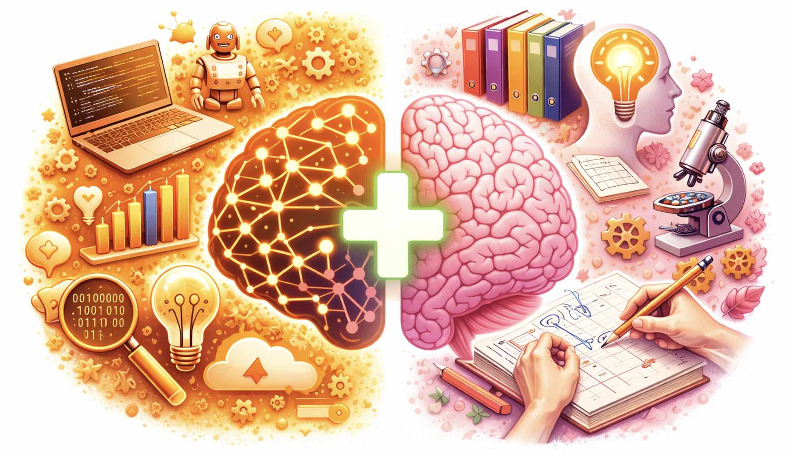

Course Plan
The course combines a weekly plenary lecture with a programme of small-group tutorials. Lectures establish shared concepts, frameworks, and case material, while tutorials provide structured, hands-on engagement with both technical and professional competencies. Together, they are designed to support progressive skill development across the semester.
Lectures
The overall sequencing of lectures, tutorials, and assessment milestones is outlined in the course plan [link], which indicates when key topics are introduced and how tutorial activities align with assessed work.
Tutorials
Structure and Requirements
Tutorials are organised into two parallel streams that run alongside the weekly lecture programme. Together, they are designed to balance technical capability (Stream 1) with professional and communication skills (Stream 2).
The streams are complementary and may be taken in parallel, allowing students to prioritise different forms of competence at different points in the semester.
Students are required to complete the minimum modules listed for both streams.

| Stream 1: Technical Competencies | Stream 2: Professional Competencies | |
|---|---|---|
| Focus & Scope | Technical foundations for working with AI systems, covering computational setup, core machine-learning concepts, and hands-on interaction with models through code and interfaces. | Professional skills for analysing, framing, communicating, and critiquing AI-assisted work in academic and practice-oriented contexts. |
| Minimum Requirements |
1× <<Python Initialisation>> 1× <<Getting Started>> 2× additional technical modules |
2× <<Crit-Style Peer Review>> sessions (at the Course Project midterm & finals) 1× <<Précis Writing>> OR <<Problem Statement>> module 1× additional skills module |
The scheduling lineup anticipates some front-loading at the beginning of the semester, with the potential to double tutorials so that students can acquire useful skills for their case studies.
Attendance beyond the requirements specified above is not mandatory. However, sustained and constructive participation may positively adjust the overall general participation grade.
Please view the current schedule of planned tutorials [here].
Note
Although there is a minimum attendance requirement for both streams of tutorials:
- The total number of modules required for minimum completion is fewer than the total number of weeks in the course.
- The flexible structure allows students to attend and complete one tutorial per week, enabling them to tailor their engagement throughout the semester.
Tutorial Timing & Registration
Tutorial places are allocated through an online registration system [link]. Registration typically opens on the Friday preceding each tutorial week, allowing students to select sessions aligned with their needs and availability.
Requirements of Tutorials
You will find basic information regarding tutorials below:
Stream 1
<<💻🔧 Python Initialisation>>
- Set up your computer for programming and running AI/ML models.
- Learn the basic workflow for starting code development.
<<💻📝🧠 Getting Started>>
- Learn basic programming principles using Python.
- Understand the fundamentals of LLM interaction through programming and online UI.
Stream 2
<<🎬 Basic Movie Editing>>
- Acquire fundamental movie editing skills.
- Please come with CapCut installed.
Please view the recorded session [here].
<<✍️ Precis Writing>>
Please bring an article of no more than 1,000 words, fiction or non-fiction, on a subject that matters to you. Choose the article with care; it should be one you have already read and can examine critically. It will form the basis of the Précis Writing Exercise. Please bring both a printed copy and a digital version of the text. The exercise includes both AI and non-AI components; please bring a laptop.